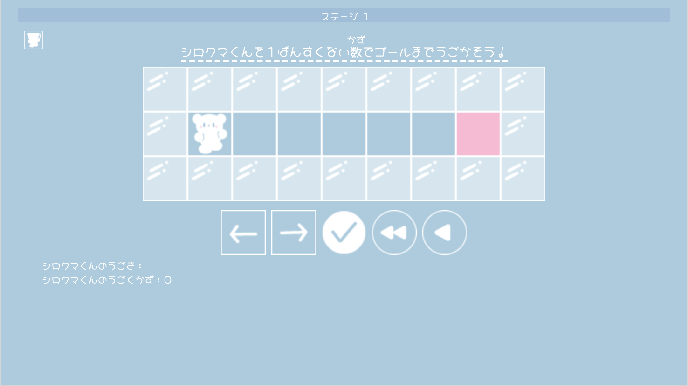
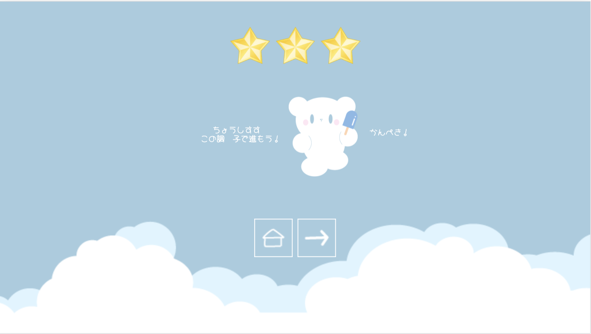

シロクマくんはアイスが大すきです。
今日もシロクマくんは大すきなアイスを食べていました。
しかし・・・
とつぜんシロクマくんが食べていたアイスが、ぜーんぶとけてしまったのです！


空を見ると、ドラゴンが火を出していました。
ドラゴンがシロクマくんのアイスをとかしてしまったのです！
アイスはとけて、もう食べることができません。
シロクマくんはドラゴンをたおしに行くことにきめたのでした！

シロクマくん
ぼくのぼうけんを手つだってほしいんだ！

アザラシくん
もちろん！ぼくは何をしたらいいかな？
シロクマくん
うごく数を一番少なくしてゴールする方ほうを、
ボタンを使って教えて！
ボタンを使って教えて！
ボタンの使い方１と２をよく読んでね！
シロクマくん
これからボタンの使い方をせつ明していくよ！
アザラシくん
うん！
シロクマくん
たとえば、このステージ！ぼくはどう動けば、
一番少ない数でピンク色のマスにゴールできるかな？
一番少ない数でピンク色のマスにゴールできるかな？

アザラシくん
右に６回動けばゴールできるね！
シロクマくん
その通り！それじゃ を６回おしてみよう！
を６回おしてみよう！
を６回おしてみよう！アザラシくん
あ！まちがえて をおしちゃったよ！
をおしちゃったよ！
をおしちゃったよ！シロクマくん
まちがえた時はで、ひとつずつ消すことができるよ！
もし、全部やりし直したい時は で、全部消すことができるよ！
で、全部消すことができるよ！
もし、全部やりし直したい時は
で、全部消すことができるよ！アザラシくん
直せたよ！そしたら をおせば、
をおせば、
シロクマくんは教えた通りに動いてくれるんだね！
をおせば、シロクマくんは教えた通りに動いてくれるんだね！
シロクマくん
ぼくの動きに合せて矢じるしの下が青く光るから、
よく見ていてね！
よく見ていてね！

アザラシくん
本当だ！シロクマくんをゴールさせることができた！
シロクマくん
今回はをおす前に動きを直したけれど、
動く数や向きがちがくてゴールできなかった時は
 をおせばまたやり直せるよ！
をおせばまたやり直せるよ！
をおす前に動きを直したけれど、動く数や向きがちがくてゴールできなかった時は
をおせばまたやり直せるよ！
シロクマくん
ゴールするとひみつノートの切れはしゲットできるよ！

アザラシくん
ステージをクリアして切れはしを集めれば、
ドラゴンのすみかや、たおし方とかも分かるんだね！
ドラゴンのすみかや、たおし方とかも分かるんだね！
シロクマくん
さらに、動く数を一番少なくしてゴールすることができたから、
星が3こ光っているよ！どのステージでも星3こを目指そう！
星が3こ光っているよ！どのステージでも星3こを目指そう！
星が3こでゴールすることができないと、
ドラゴンのすみかになかなかつかないから注意してね！
ドラゴンのすみかになかなかつかないから注意してね！

アザラシくん
うん！がんばるよ！
でもボタンの使い方わすれちゃったらどうしよう・・
でもボタンの使い方わすれちゃったらどうしよう・・
シロクマくん
もし使い方をわすれちゃってもだいじょうぶ！
左上にある をおしてみてね！
をおしてみてね！
左上にある
をおしてみてね！アザラシくん
わぁ！これでボタンの使い方をいつでもかくにんできるんだね！
シロクマくん
その通り！さらにステージが進むとヒントを見ることもできるんだよ！
アザラシくん
むずかしくて、どうしてもゴールできない時に見れるんだね！
シロクマくん
これであそびかたのをせつ明はおわりだよ！
さぁ、ぼうけんを始めよう！
さぁ、ぼうけんを始めよう！